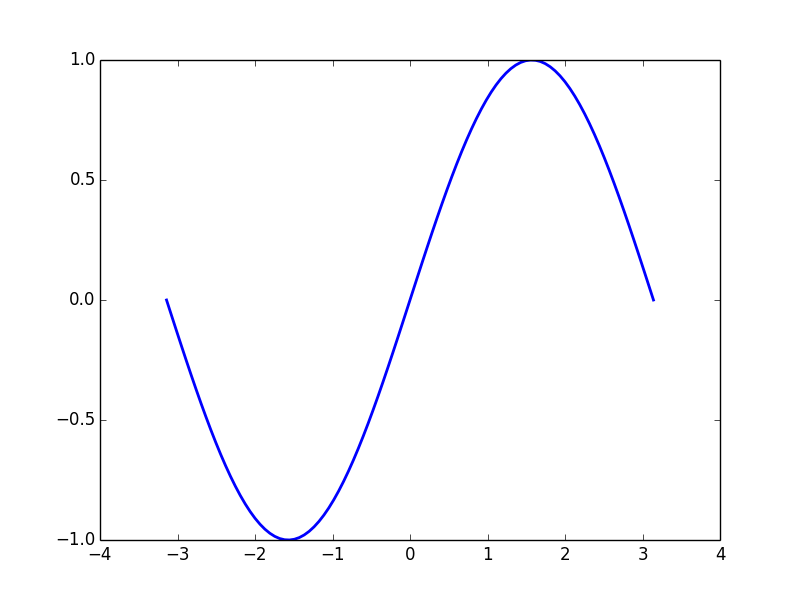

| Autores: | Nicolas Rougier |
|---|
Prólogo
Utilice la palabra clave topic para cualquier prólogo
Contenido
Asegúrese de leer Documentation style guide [1], tips, tricks [2] y convenciones sobre el contenido de la documentación y flujo de trabajo.
Elija un tema que todavía no está cubierto y escriba así!
Crear un nuevo directorio en intro o advanced, crear un archivo index.rst y comenzar a escribir. No se olvide de actualizar el archivo scipy-lecture-notes/index.rst de tal manera que su nuevo tutorial aparezca en la tabla de contenidos.
También hay que tener en cuenta que estos tutoriales pueden ser usados para la enseñanza y las diferentes partes se pueden combinar para formar un curso de Python para computación científica. Queremos que sean muy interactivos y razonablemente cortos (de una a dos horas) o su público podría dormirse mucho antes de que haya terminado de hablar ...
Por último, pero no menos importante, el objetivo de este material es proporcionar un texto conciso para el aprendizaje de las principales características del ecosistema scipy. Si usted desea contribuir al material de referencia, le sugerimos contribuir a la documentación de los paquetes específicos en los que está interesado.
La versión HTML se utiliza para mostrarlo en pantalla mientras se enseña. El objetivo es tener el mismo material como en las notas de muestra. Por tanto es necesario mostrarlo de una concisa, con párrafos y oraciones cortas. Sin embargo, a largo plazo, es útil tener párrafos más elaborados que la gente pueda leer y consultar. Para esto, la directiva sphinx ``tip``creará párrafos plegables, que se pueden ocultar durante una presentación oral
.. tip:: A continuación inserte una discusión en toda regla, que será plegable en la versión HTML.
Puede extenderse sobre varios párrafos
Esto hace de la siguiente manera:
Truco
A continuación inserte una discusión en toda regla, que será plegable en la versión HTML.
Puede extenderse sobre varios párrafos
Nosotros no revisamos las figuras en el repositorio. Cualquier figura generada a partir de un script Python debe ser nombrado como plot_xxx.py (xxx puede ser cualquier cosa, por supuesto) y debe estar en el directorio examples. La imagen generada se llamará usando el nombre del script.
Esta es la forma de incluir una imagen y vincularla con el código:
.. image:: auto_examples/images/plot_simple_1.png
:target: auto_examples/plot_simple.html
Se puede visualizar el código correspondiente utilizando la directiva literalinclude.
import numpy as np
import matplotlib.pyplot as plt
X = np.linspace(-np.pi,np.pi,100)
Y = np.sin(X)
plt.plot(X, Y, linewidth=2)
plt.show()
Nota
El código para proporcionar este tipo de inclusión fue adoptado del proyecto scikits.learn y se puede encontrar en sphinxext/gen_rst.py.
Hay tres tipos principales de marcado que se debe utilizar: cursiva, negrita y fuente fija. Cursiva debe ser utilizado en la introducción a una nueva técnica, negrita debe ser utilizado para dar énfasis y fuente fija para el código fuente.
Ejemplo:
Cuando se utiliza la programación orientada a objetos en Python que se debe utilizar la palabra clave class para definir clases.
El texto anterior en reStructuredText es:
Cuando se utiliza la *programación orientada a objetos* en Python que se debe *utilizar* la palabra clave ``class`` para definir *clases*.
El objetivo de los apuntes de clase scipy no es duplicar o sustituir la documentación de los diferentes paquetes. Se recomienda crear enlaces a la documentación original.
Para obtener referencias cruzadas a la documentación API es preferible usar intersphinx extension. Esto proporciona las directivas :mod:, :class: y :func: para enlazar los módulos, clases y funciones respectivamente. Por ejemplo, :func:`numpy.var` crea un enlace a numpy.var().
Trate de evitar párrafos sin estrutuctura o el documento podría llegar a ser difícil de leer:
===================
Título del capítulo
===================
Contenido de la muestra.
Section
=======
Subsection
----------
Paragraph
.........
Y un poco de texto.
La forma más fácil de hacer su propia versión de este material didáctico es Github, utilizando el sistema de control de versiones git para mantener su propia versión. Para ello, lo único que tienes que hacer es crear una cuenta en github (este sitio) y hacer clic en el botón fork, en la parte superior derecha de esta página. Puede usar git pull para actualizar tu fork. Si quiere contribuir a la versión original, sólo tiene que hacer un pull request, utilizando el botón en la parte superior de la página de su fork.
Por favor, abstengase de modificar el Makefile a menos que sea absolutamente necesario.
Figuras posicionadas con :align: right son flotantes. Para limpiar, use
|clear-floats|